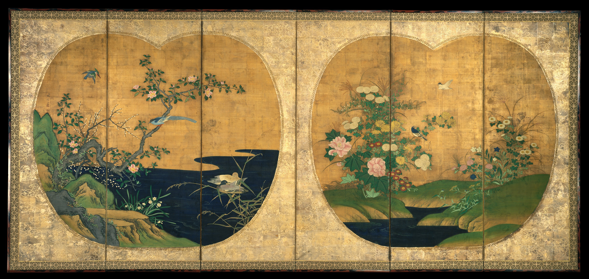

Distributed Communications
From the starter competitive game implemented by the professor, Module 3 had us alter it in pairs to turn it into a collaborative game. Using only the ESP32 (without it being necessary to add any external hardware), we gained experience with the ESP-NOW communication protocol.
Our transition from a multiplayer competitive button masher game to a cooperative game was inspired by Taiko no Tatsujin, a Japanese rhythm video game. The players must hit the bubbles as they pass by the target line to gain points, and will lose points if they have poor timing, in order to increase the shared score between the players. The bubbles are not synchronized between devices; rather each player has to focus on doing their part. The goal is to collectively aim to score the most points and to not diminish your partner's efforts by not losing points.
Initially planned to split the work between design and game logic implementation between Akito and me, respectively. However, we ended up switching roles, with Akito focusing on how to implement the timing synchronisation and the scoring, and with me focusing on the visual design and implementation. In the end, we worked together and had to bridge them cross-functionally to ensure they were coherent.
Code Implementation and Challenges
For the visual part, my first thought was regarding the background. In the original game, there are cute doodle-like drawings of Japanese designs and I wanted to have an image of a Japanese screen, folding panel in the background. I went through the Met Museum Open Access collection and Birds and Flowers of Autumn and Winter stood out to me.

Birds and Flowers of Autumn and Winter, Kano Chikanobu (Met Museum).
Not only is it pretty, but it reminded me of the original game and even had a connection to Module 1's theme (transition). As explained in the Met's description:
The Kano school rendered plants, birds, and landscapes with remarkable realism while also framing them as auspicious emblems of prosperity, longevity, and harmony. As the official painters to Japan's political and military elite, Kano artists created works that both beautified architectural spaces and visually reinforced their patrons' authority and good fortune. Bird-and-flower paintings (kachō-ga), often set against luminous gold-leaf backgrounds, celebrated the changing seasons and reflected the central place of nature's cycles in Japanese life.
Following the orientation from Lab 1 with the TFT Display, I converted the image to a bitmap using http://rinkydinkelectronics.com/t_imageconverter565.php. I had to go through multiple iterations to get the sizing correct for the image converter (300KB upload limit) and then to also ensure it fit into the display correctly, without being too zoomed in or cropping incorrectly. In the end, I just resized the image in Preview to have the same pixel dimensions as the TFT display (240 × 135), converted it to bg.h and added it to the top of the Arduino code.
Then I worked on creating the display message for the shared display. The reason for the spr. functions will be discussed in the next section, but the basic implementation was rather straightforward, just concatenate the variable sharedScore, converted to String, into the score message and format the rectangle sizing like a footer. Initially, I had if/else blocks to determine what colour the text should be depending on whether the game was over or not, but I realised I could leverage the ternary operator (? :), which I have started to use more frequently for hdl/logic designs and forget I can employ in order contexts.
// Draw Score footer to sprite
spr.fillRect(0, 118, 240, 17, TFT_BLACK);
spr.setTextDatum(MC_DATUM);
spr.setTextColor(gameOver ? TFT_DARKGREEN : TFT_SKYBLUE, TFT_BLACK);
spr.drawString(gameOver ? ("SCORE: " + String(sharedScore) + " Press for rematch") : ("SCORE: " + String(sharedScore) + " "), 120, 126, 2);
spr.setTextDatum(TL_DATUM);At this point, Akito had progressed into figuring out the timing and scoring mechanism, so I had to face the bubble implementation. I hoped to be able to draw from my prior experience from Module 1 in rendering circles and moving bubbles, which was helpful in solving a problem that I faced and will soon address.
int totalBubbles = correctTimes[PLAYER_ID].arraySize;
for (int i = 0; i < totalBubbles; i++) {
if (noteDone[i]) continue;
float targetTime = correctTimes[PLAYER_ID].timing[i];The total amount of bubbles is obtained by the size of the correctTimes array for each PLAYER_ID, which is defined in the beginning of the program. Then, to get assign each bubble its target time, when it should be hit, you iterate through the correctTimes[PLAYER_ID].timing[i].
The bubbles are constructed through fillCircle and drawCircle, combined with the float x to determine where in their trajectory they are (to render them at the corresponding point in the display) and the condition (x <= 240.0f) to check whether they are past the right edge of the screen.
float x = ((timeElapsed - spawnTime) / approachDuration) * bubbleTargetX;
if (x <= 240.0f) {
spr.fillCircle((int)x, (int)bubbleY, 10, playerColors[PLAYER_ID]);
spr.drawCircle((int)x, (int)bubbleY, 10, TFT_WHITE);In my first iteration, I had the issue of the bubbles leaving a trail of pixels instead of the clear background image. An option I tried after a suggestion from Gemini 3.0 (Auto - Low), after being prompted "Why is there a pixel trail in my screen, as pictured, when the bubbles moves?" (because I was confused why I did not have that issue with my Module 1 bubbles) was repatching the pixels after the bubble passed by, but then a challenge that I faced was to erase the bubbles from the screen as they moved in the frames, because they started to form a trail of frames in the display, and they often kept flickering too.
I remembered about the sprite buffer technique that I learned about in Module 1 to handle the heavy graphics that are rapidly changing. Instead of directly drawing the pixels to the TFT screen, they are first rendered in a buffer to create the full frame, which is pushed already complete to the screen.
TFT_eSPI tft = TFT_eSPI();
TFT_eSprite spr = TFT_eSprite(&tft); // active render sprite buffer
TFT_eSprite bgSprite = TFT_eSprite(&tft); // sprite the (static) backgroundAn increment I tried for this project was having two sprites buffers to further ease the loading requirements for the graphics. Since the background is static throughout the game, it was possible to optimise by having it be rendered separately from the dynamic foreground design. The bgSprite is pushed to the screen only at setup(). On the other hand, the spr sprite is called periodically at 60fps and whenever an event happens (pressing the button, update score with other player action, etc.)
// render frame in sprite
void renderFrame() {
if (gameOver) return;
uint32_t now = millis();
if (now - lastBubbleUpdate > 16) { // help with the lagging
lastBubbleUpdate = now;
drawScene((float)(now - roundStartTime));
}
}
// For updates outside of the frame (like clicking and other player update)
void drawScreen() {
float timeElapsed = gameOver ? -1.0f : (float)(millis() - roundStartTime);
drawScene(timeElapsed);
}After analysing our game experience, we decided to have a notification inform the player their score for that specific bubble at the top of the screen. The variable feedbackDuration determines for how long the message stays on screen and it uses the assigned colours for each rating to determine the test colour. The message is also loaded first into the sprite buffer.
if (lastScoreTime > 0 && millis() - lastScoreTime < feedbackDuration) {
spr.setTextDatum(MC_DATUM);
uint16_t ratingColor = getRatingColor(lastRating);
spr.setTextColor(ratingColor, TFT_BLACK);
spr.drawString(ratingLabels[lastRating], 120, 30, 2); // Display centered near top
spr.setTextDatum(TL_DATUM);
}My group partner also thought it would be good to have the target bar be coloured the same as the obtained point/notification message, so that was implemented as well.
Showcase and Improvements
The final version presented in the showcase can be seen in the video.
Showcase Video
The code is available here: GitHub Repo